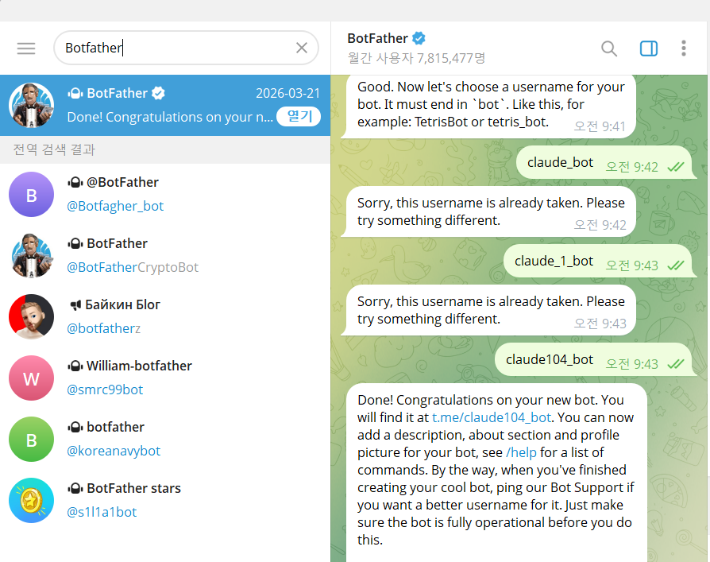
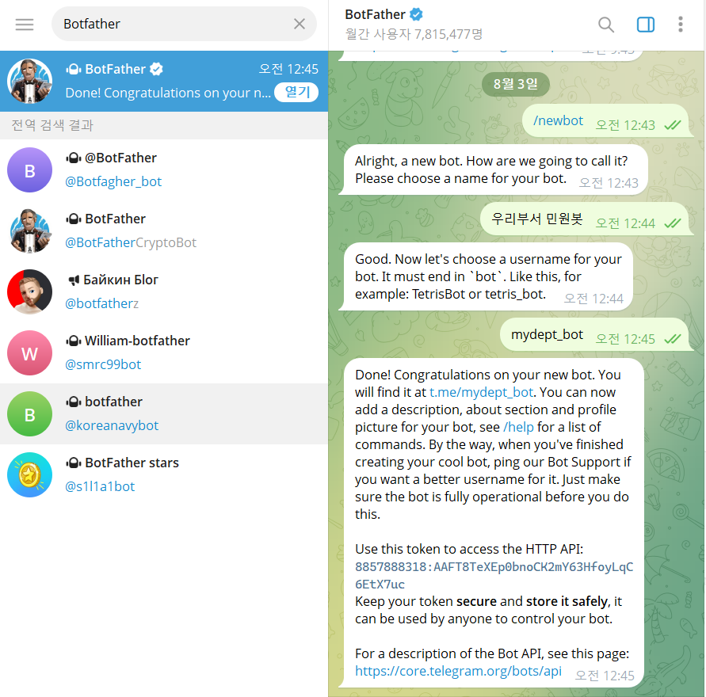
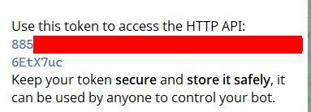
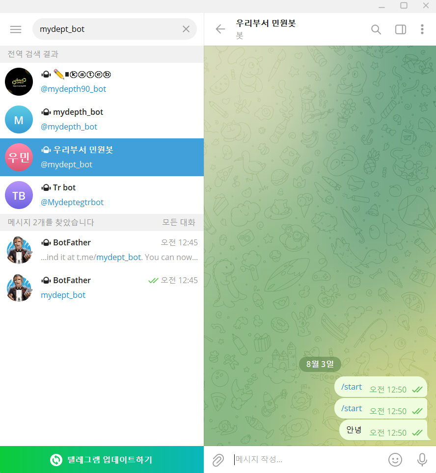
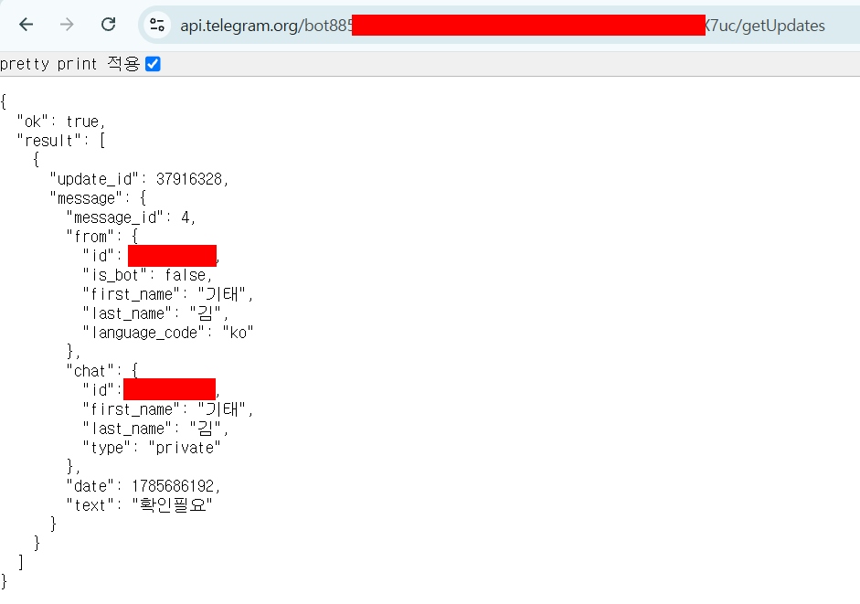

2일차에는 매일 아침 브리핑을 보내주는 봇, 날씨를 알려주는 봇처럼
텔레그램으로 메시지를 보내는 자동화를 만듭니다. 그러려면 내 전용
텔레그램 봇을 하나 만들고, 그 봇이 "누구에게" 메시지를 보낼지 알려줄
내 chat id라는 숫자를 미리 알아둬야 합니다.
① 텔레그램 앱 설치
휴대폰이나 컴퓨터 어느 쪽이든 상관없습니다. 앱스토어(또는 플레이스토어)나
https://telegram.org에서 텔레그램(Telegram) 앱을
설치하고, 전화번호로 가입합니다. 이미 쓰고 있다면 이 단계는 건너뜁니다.
② BotFather로 내 봇 만들기
텔레그램 안에는 다른 사람의 봇을 대신 만들어주는 공식 봇이 있습니다.
이름은 BotFather입니다. 이 봇과 대화하면서 내 봇을 만듭니다.
BotFather 찾기
텔레그램 위쪽 검색창에 @BotFather를 입력해 검색하고,
파란 확인 배지가 붙은 공식 계정을 열어 시작(Start)과 비슷한 문구의 버튼을 누릅니다.
검색 결과에는 이름이 비슷한 가짜 계정이 여럿 섞여 있습니다
([그림 준2-1] 아래쪽 목록). 파란 확인 배지가 붙은 맨 위의
BotFather가 공식 계정입니다.
[그림 준2-1] 검색 결과의 공식 BotFather 계정(왼쪽)과 사용자명을 정하는 대화(오른쪽)

새 봇 만들기 명령 보내기
대화창에 /newbot이라고 입력해 보냅니다.
봇 이름 정하기
BotFather가 이름을 물으면 원하는 이름(예: 우리부서 민원봇)을
입력합니다. 한글도 가능하며, 화면에 표시되는 이름일 뿐입니다.
사용자명(username) 정하기
이어서 사용자명을 물으면 영문과 숫자로 된 고유한 이름을 입력합니다.
사용자명은 반드시 bot으로 끝나야 합니다
BotFather도 It must end in `bot`이라고 안내합니다.
mydept_bot처럼 끝이 bot이어야
하고, 그렇지 않으면 다시 입력하라고 합니다.
이미 다른 사람이 쓰고 있는 이름이면
Sorry, this username is already taken.이라는 답이
돌아옵니다. 그럴 때는 뒤에 숫자를 붙이는 식으로 다시 시도하세요 —
[그림 준2-1]도 두 번 거부당한 뒤 세 번째에 성공한 모습입니다.
[그림 준2-2] /newbot부터 토큰 발급까지의 대화 전체

그림에서는 이름을 우리부서 민원봇,
사용자명을 mydept_bot으로 정했습니다. 이름이 통과하면
Done! Congratulations on your new bot.이라는 답과 함께
아래 5단계의 토큰이 바로 이어서 옵니다.
토큰 복사해서 보관
성공 메시지 아래에 Use this token to access the HTTP API:라는
줄이 있고, 그 밑에 긴 문자열(토큰)이 있습니다. 이 토큰을 복사해 메모장 등에 잠시
붙여둡니다. 수업 중 n8n에 등록할 값입니다.
토큰도 API 키와 마찬가지로 비밀번호처럼 다루세요. 남에게 보여주거나 전송하지 마세요.
BotFather도 바로 아래에 Keep your token secure and store it safely라고
적어 보냅니다. 아래 그림에서 토큰 가운데가 빨갛게 덮여 있는 것은 교재에서 일부러 가린
것이고, 실제 화면에는 문자열이 그대로 보입니다.
[그림 준2-3] 토큰 부분만 확대한 모습

③ 내 chat id 알아내기
봇을 만든 것만으로는 봇이 나에게 메시지를 보낼 수 없습니다. "나"가 누구인지
알려주는 숫자, chat id를 알아내야 합니다. 아래 순서를 하나도 건너뛰지 말고
그대로 따라 하세요.
내가 먼저 봇에게 말 걸기
방금 만든 내 봇을 검색해서 열고(사용자명으로 검색), 시작(Start)과 비슷한 문구의 버튼을
누르거나 아무 말이나("안녕" 등) 보냅니다.
이 단계를 빼먹으면 다음 단계가 텅 비어 보입니다
텔레그램 봇은 내가 먼저 말을 건 사람의 정보만 알 수 있습니다. 이 순서를
건너뛰고 바로 다음 단계로 가면 결과가 비어 있어서 실패한 줄 착각하게 됩니다.
반드시 내가 먼저 메시지를 보낸 뒤에 다음 단계로 넘어가세요.
검색창에 사용자명(예: mydept_bot)을 넣으면
비슷한 이름이 여럿 나옵니다. 내가 만든 봇은 봇 이름(예:
우리부서 민원봇)으로 표시되니 그것을 고르세요.
[그림 준2-4]는 /start와 안녕을 보낸 모습입니다.
[그림 준2-4] 내 봇을 찾아 메시지를 보낸 대화창

getUpdates 주소로 접속하기
아까 복사해둔 토큰을 아래 주소의 <토큰> 자리에 그대로
바꿔 넣고, 브라우저 주소창에 붙여넣어 접속합니다.
화면에서 chat id 찾기
화면에 복잡한 글자가 나타나는데, 그 안에서 "chat" 아래에
있는 "id" 값을 찾습니다. 그 숫자가 내 chat id입니다.
바로 위 "from" 아래에도 같은 모양의
"id"가 있습니다. 개인 대화에서는 두 값이 같지만,
우리가 쓸 것은 "chat" 쪽입니다. 그 아래
"first_name"·"type": "private"이
함께 보이면 제대로 찾은 것입니다. 그림에서 숫자가 빨갛게 덮여 있는 것은 교재에서
일부러 가린 것입니다.
[그림 준2-5] getUpdates 결과 화면에서 chat id 위치

자주 막히는 곳
getUpdates 결과가 "result":[]처럼 텅 비어 보인다면, 십중팔구
1단계(내가 먼저 봇에게 말 걸기)를 하지 않은 것입니다. 봇에게 메시지를 보낸 뒤
새로고침해서 다시 확인하세요.
또한 일부 기관 네트워크(공공기관 와이파이·사내망)는 텔레그램 접속 자체를
차단해두기도 합니다. 위 주소가 아예 열리지 않거나 텔레그램 앱이 로그인조차
안 된다면, 휴대폰의 와이파이를 끄고 이동통신 데이터(LTE/5G)로 전환해서
다시 시도해보세요.